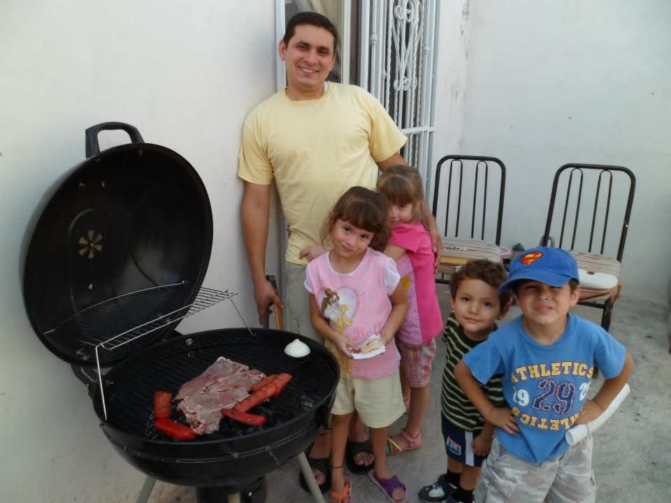

About Us - Team Entretien Menager

We are from Mexico, Saltillo Coahuila and we started this cleaning after we moved to Canada in October 2019. The company was first created in June 2023, a few years after we arrived. My dad (the boss) was working in a weilding company named FINAR before he decided to quit and start with the company! At first, there were not a lot of contracts of people who wanted to hire us, but then we made partnershipp with cleaner Michel Belanger who gave us some of his contracts so we could get started. After some time, we started promoting our services and in short time, we got our own contract! We then started including additional work such as moving things, cleaning shoveling snow, cutting grass and a whole lot more. Even though we just started, we assure you will have the best cleaning experience ever!
To send us your cleaning service request, visit our request service page!
Contact us through our social media!